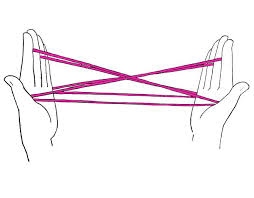

Computing AI
Recent neural net heavy approaches to "AI" are too dependent on computation of decisions, not on any underlying model of intelligence. What is a model? In math teaching, relations, models, functions are usually conflated. Some call math "the study of patterns" but that description also falls short..
Imagine the cat's cradle game,

This is a web of relations. It doesn't necessarily compute anything. Move one finger that causes changes in other fingers - a relation. We can transform this model into another one , maybe something simpler, play with it etc. I could utilize differential calculus, all kinds of odd algebras, to create this web of relations.
This is not a function. But we can retrieve a function out of this model, it could be the the function of "going from finger X to finger Y, while always remaining in the middle". So I specified initial and boundary conditions, and I received a function, something computable. $f(x)=2x$ is a function. I plug in $x=2$, it gives me 4.
Let's change the domain, real world, physics, Laplace Equation in 2D is
$$ \frac{\partial^2 p}{\partial x} + \frac{\partial^2 p}{\partial y} = 0 $$
A very simple, concise model. This approach is used to represent heat conduction, fluid dynamics, electrostatics.. many areas.
And here is solution function based on certain initial and boundary conditions.
$$
p(x,y) =
\frac{\sinh \left( \frac{3/2 \pi y}{L_y} \right)}
{\sinh \left( \frac{3/2 \pi L_y}{L_x} \right)}
\sin \left( \frac{3/2 \pi x}{L_x} \right)
$$
A bloddy mess. It is of course computable.
Then, a relation, a model is much more fundamental, essential construct. A function, as a solution, can be complicated. When we model the world, we need to work with the essentials, they are much more powerful. We invented entire areas of math so we can do this.
Now, current approaches of AI, neural nets, can only see, work with the computable stuff, with functions. Well actually they cant even get the analytical mess correctly, they have to approximate it. Both of these problems now lead us to an odd situation; What we reverse-engineer from data is not intelligence, only one solution to an underlying model we know nothing about, and only under certain conditions. That's why these NNs, deep or otherwise, are tied so much to data, are fragile, and too dependent on their surrounding conditions, and fail to generalize.
But there is more...
What if the data cannot even contain the traces of a function in some cases? See article on teaching machines how to drive. In order to teach machines how to drive using pure vision, the system was fed data on controls (steering, break, acceleration) and images of the outside world, in pairs. Feed it gazillions of such data, the program will learn the relation between them and supposed learn how to drive. But the article makes the case that might not be the best way to learn. Say image X is given, in it car makes right turn. A similar image Y is given, car makes a left turn there.. What should the machine learn in this case?
The problem is that there might not be a direct function between controls and outside images. If the root of science is math, and the root of math is number theory / sets, a function is a mapping from one set to another, a one-to-one or many-to-one mapping. If image X results in left steering, similar image Y in right steering, there is no function there. 2 + 2 cannot give you 4 and 14 at the same time. NNs cannot approximate data coming from such process, as they are not the traces of a function.
So besides approximating functions being the wrong track for AI research, we also do not have traces of functions in most datasets we capture. NNs were the lowest fruit in the tree, but to get more fruit, different tools are required.
Question
In computational science (for physics), we also approximate the functions generated from the true model
Answer
Yes but in that case you are going forward from a known model, not going backward, blindly from data with nothing known. Going forward with a clean model has its challanges, but we always have a solid basis, we can make use of that. Plug something into it, might get certain functions that might be easier etc.
Question
What is the current state of AI research?
Answer
There are currently no reputable, major work going on for modeling intelligence. I don't want to say 'we barely scratched the surface' because noone is even scrathing the surface. All the energy is around the monkey biz, NNs, data, etc. If you asked me 18th century, 'whats going on in physics?' I'd have said yeah they are modeling some shit'. Cant say the same for intelligence.
Question
Then NNs look at a data, like a lot of $(x=2.1,y=4.5)$, $(x=1.9,3.9)$, .. and try to guess this function is probably $y = f(x) = 2x$?
Answer
Essentially yes.. They usually don't attempt at the analytical formula, represent $f(x)$ through a jungle of "neural" connections, at the end tho they try to reach something akin to a function by looking at data.
Note: They represent functions bcz they need to "run" something for each data point and see how close they came to the answer (also in data). They use that error to adjust the internal jungle of neurons so next time it is better.
Question
For given IC and BC above, you retrieved a complicated function. But it's only one, manageable.
Answer
The problem is for slightly different IC/BC you would get completely different (and just as complicated) function. It is a complete mess to manage from the other direction. People need to get a paper and pencil and start thinking things through, at a more fundamental level.